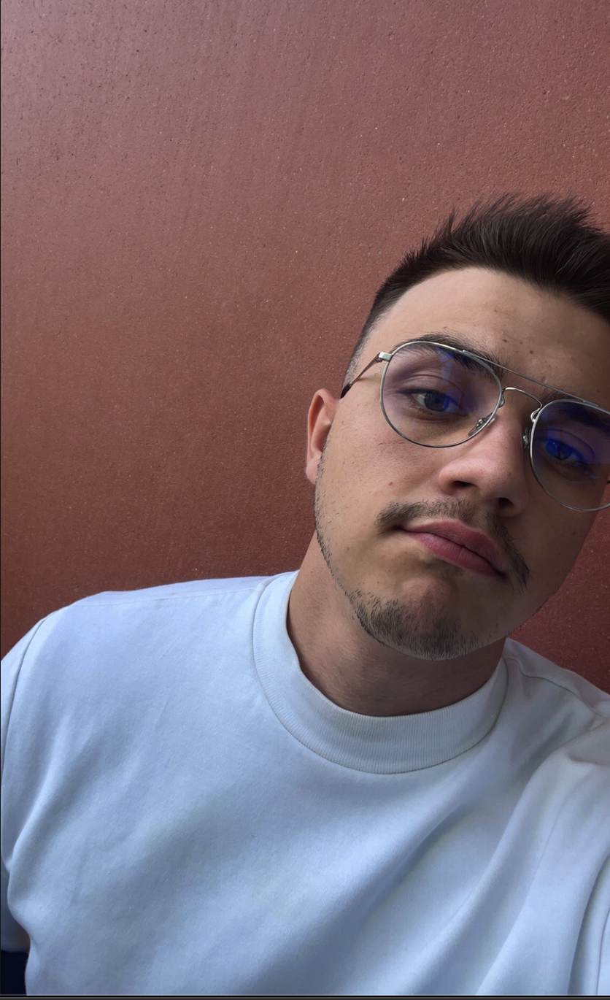

Hola, soy Luca Di Domenico
Je suis un étudiant à Kedge Business School en 3ème année, après avoir finalisé un DUT GEA à Marseille. Je suis quelqu'un passionné par le sport plus particulièrement la F1, l'UFC et le foot.🏎🥊⚽️ Mon objectif de vie est d'être millionaire et pouvoir subvenir à tous mes besoins ainsi qu'à ceux de mes proches.💰🤑
Rejoignez-moi !Comment je serai millionaire ? 💰💰
Le principe est plutôt simple, pour devenir millionaire, je souhaiterai avoir 11 fils à l'avenir, avec cet avantage, je créerai le FC DIDO qui sera au départ un club familiale, mais qui à l'avenir, concurrencera des équipes reconnues mondialement dans la Ligue des Champions. Mes enfants auront des entrainements quotidien, sans négliger le fait d'aller à l'école, qui reste primordiale. ⚽️🏆💸 D'autre part, hormis le club, je souhaiterai créer mon entreprise et révolutionner le monde (il ne me reste que l'idée à trouver). 🏢🤔
Plus tard, j'aimerai voyager ... ✈️🌍
J'aimerai voyager, dès que cela sera possible, aux 4 coins du monde. En commençant par NY en hiver, puis Londres en automne, en Thaïlande l'été, et enfin en Espagne au printemps. Mon but est de voir le meilleur de chacun de ces lieucx avec la saison qui lui ai adapté. J'aimerai aussi pouvoir voyager accompagné de mes amis les plus proches et qui feront de ce voyage un rêve.🤝💪💭
Une première étape après mes études 1️⃣🏆
Une fois que j'aurai terminé mes études, je travaillerai dans une boîte à l'internationale en tant que commercial. A la suite de cela, en comprenant l'entreprise et le milieu dans lequel je me trouverai, j'amerai devenir Directeur Commercial ou Directeur d'Achats et de Ventes. En exerçant ses métiers, mon capital sera alors renforcer avec mon but de créer mon club de foot ainsi que mon entreprise, qui seront alors à porter de main. ☎️💹 Toutefois avant de pouvoir concevoir mes joueurs de rêves, il faudra leur trouver une maman qui sera une frappe. Elle sera sportive, intelligente, accompagnée de valeurs familiale forte et de caractère. Comme exemple actuel, je pourrai comparer ma futur femme à Antonela Reccuzzo qui n'est autre que la femme de Messi.💍😍❤️